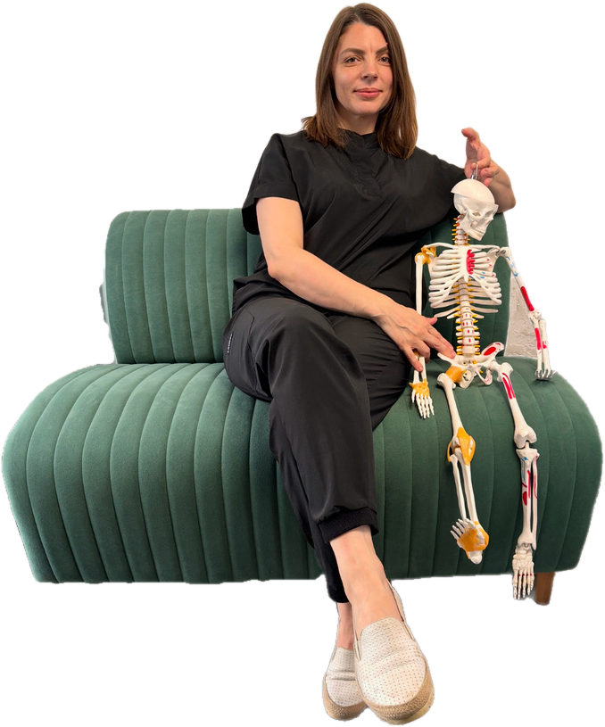
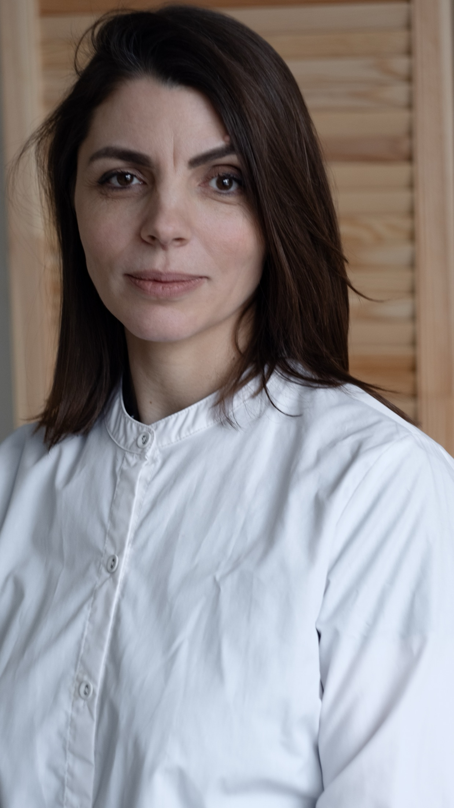
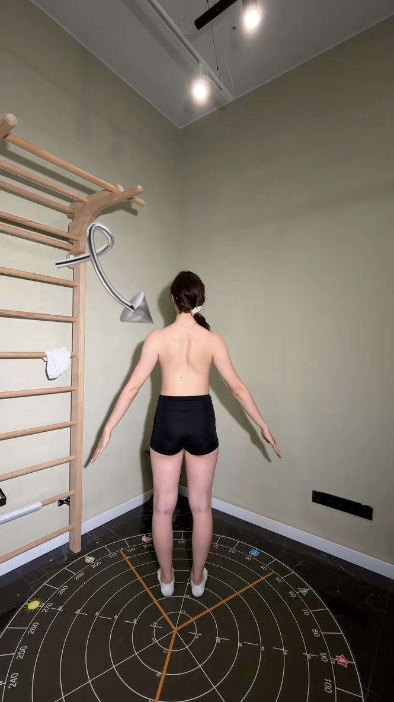
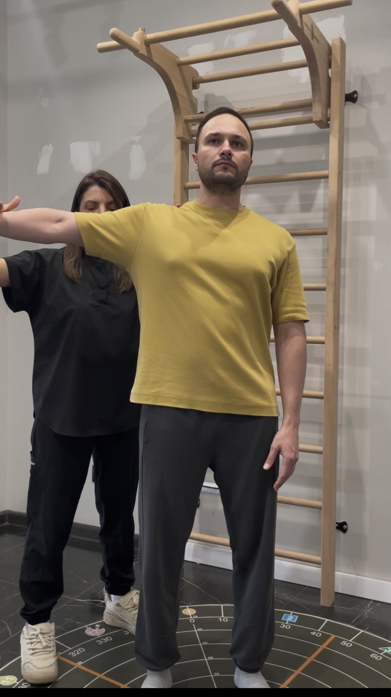
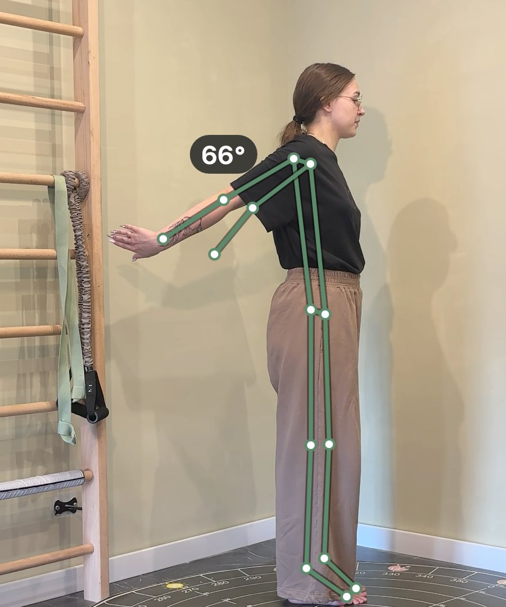
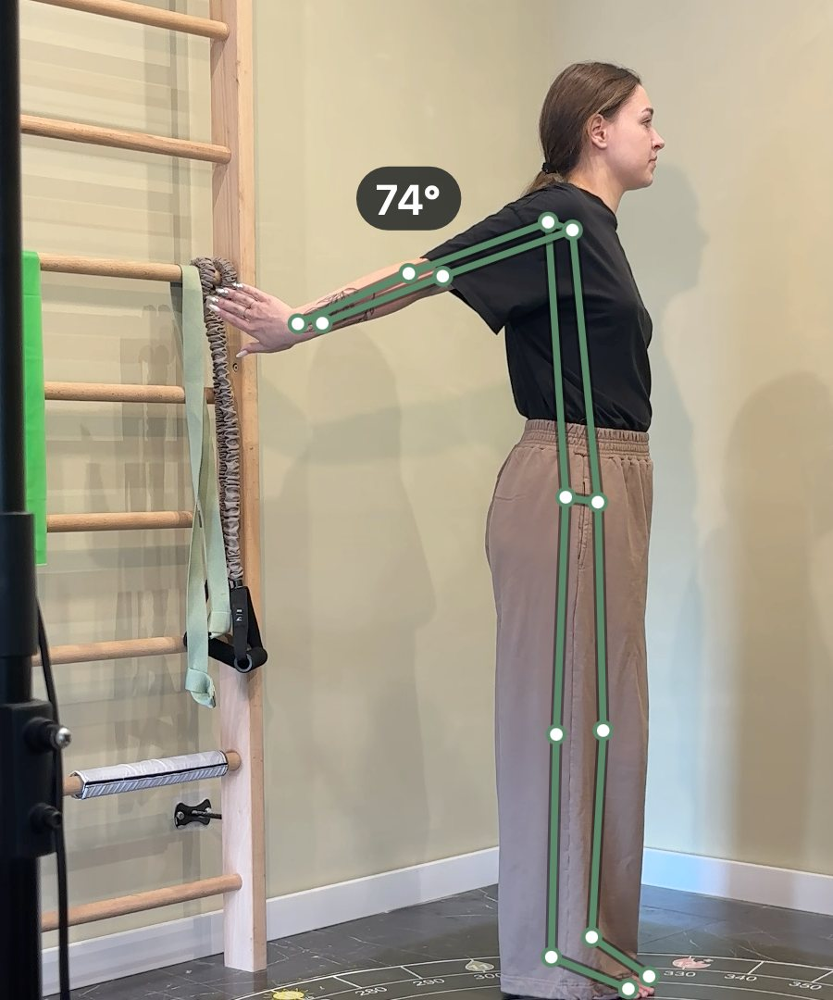
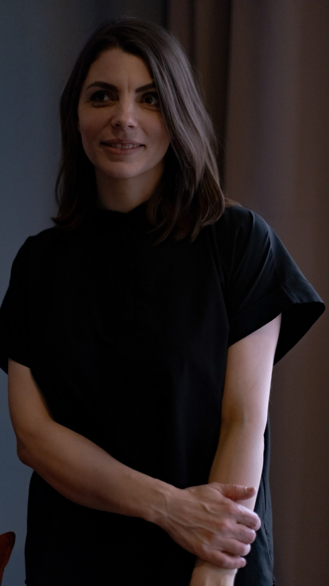

Снова двигатьсясвободно и не думатьо боли каждый день.

Если напряжение в спине, шее, плече или колене возвращается после массажа и отдыха, я оцениваю по отклику мышц, как тело распределяет нагрузку, и на той же консультации работаю с этим мягкими техниками и упражнениями. Движение проверяем до и после, разницу вы видите сами.
Оценка движения, мягкие техники и упражнения, оплата после консультации. Взрослые и дети. Консультация не является медицинской услугой: диагнозы не ставлю, лечение не назначаю
Отзывы и маршрут в 2ГИСЧто говорят после консультации
«Марина, здравствуйте! Благодарю Вас, после приёма у меня гораздо меньше болит поясница. Спасибо вам!»
Из сообщений клиентов«Я ходила с болью в ноге год! Она ушла за один приём».
ИринаОтзывы публикуются с согласия клиентов. Результат индивидуален и зависит от конкретной ситуации.
Если ваша история похожа, приходите: на первой консультации оценим движение до и после, и вы сами увидите разницу.
Выбрать времяНапряжение, которое возвращается после массажа, отдыха и привычных упражнений
Я начинаю с оценки по отклику мышц: смотрю, как тело распределяет нагрузку при движении и какие мышцы берут на себя лишнее. Напряжение часто держится не там, где его чувствуют, а там, где тело привыкло компенсировать.
Напряжение в спине и пояснице
Напряжение в пояснице появляется после работы в наклоне или долгого сидения и возвращается через неделю после массажа.
Шея скованная, плечо не поднимается
Плечо не поднимается до конца, шея скованная по утрам и после долгой работы за экраном.
Колено или стопа мешают при ходьбе
Колено или голеностоп напоминают о себе при каждом шаге, после растяжения трудно вернуться к привычной нагрузке.
Хотите улучшить осанку
Сутулость, привычка стоять с опорой на одну ногу, усталость спины к вечеру. У взрослых и у детей.
Усталость и напряжение без причины
Мышечное напряжение возвращается снова и снова, к вечеру нет сил, хотя явных причин для этого нет.
Годы процедур, а боль возвращается
Напряжение возвращается годами после массажа и процедур. Я работаю с тем, как тело привыкло двигаться, а не повторяю процедуры.
Консультация не является медицинской услугой: диагнозы я не ставлю, лечение не назначаю, анализы и снимки не расшифровываю. Если вижу, что нужен врач, скажу об этом прямо и подскажу, к кому обратиться.
Узнали себя в одном из пунктов? Выберите удобное время, консультация идёт час, оплата после неё.
Выбрать времяОценка движения, мягкие техники и упражнения за одну консультацию



Беседа и оценка по отклику мышц
Основной инструмент прикладной кинезиологии, мануально-мышечное тестирование: оцениваю тонус и реакцию мышц, подвижность суставов, равновесие и координацию. Так видно, какие мышцы берут на себя лишнюю нагрузку.
Где тело компенсирует
Напряжение в шее может держаться из-за привычного положения плеч, а усталость колена из-за того, как работает стопа. По отклику мышц нахожу, где тело привыкло компенсировать.
Мягкие техники
Работаю с найденным напряжением мягкими техниками: расслабление мышц, дыхание, положение тела. Техники подбираю под ваш случай. Кинезиотейп по вашему желанию, как поддержка при движении, входит в стоимость.
Упражнения и план
Повторяю оценку: мышцы отвечают иначе, и вы видите, изменилось ли движение. Подбираю одно-два упражнения домой и план на две недели: сон, нагрузка, восстановление.
Число консультаций зависит от случая. На первой обсудим, сколько встреч может понадобиться.
Хотите увидеть, как это работает на вашем теле? Одна консультация, и разница видна по движению ещё в кабинете.
Выбрать времяРазницу до и после видно в градусах
В кабинете я снимаю движение на камеру до консультации и после неё. Программа отмечает суставы и считает углы: насколько поднимается рука, на сколько градусов наклонены плечи и таз. Оба кадра стоят рядом, и вы сравниваете их сами, а не верите мне на слово.

До
ПослеАмплитуда движения правой руки: 66° до консультации и 74° после. Между кадрами прошёл час.
Фото опубликовано с согласия клиентки. Программа фиксирует движение, диагнозов она не ставит. Результат индивидуален.
Хотите увидеть свои цифры до и после? Выберите удобное время.
Выбрать времяЧто спрашивают до записи
Будет ли больно?
Нет. Оценка по отклику мышц идёт лёгким давлением на руку или ногу, техники мягкие. Если что-то неприятно, скажите, я поменяю технику.
Что надеть?
Удобную одежду, в которой легко двигаться: футболку и леггинсы или шорты. Переодеться можно в кабинете.
Нужно ли брать снимки и анализы?
Если они есть, можно принести для сведения. Я их не расшифровываю и выводов по ним не делаю, консультация возможна и без них.
Можно ли с ребёнком?
Да. Детей консультирую только в присутствии родителя или законного представителя, оплату вносит родитель. Можно прийти вместе: сначала вы, потом ребёнок.
Сколько консультаций понадобится?
Зависит от случая. На первой оценим движение до и после и обсудим, сколько встреч может понадобиться.
Что, если мне не подойдёт?
Напишите ассистенту до записи и опишите, что беспокоит. Консультацию стоит перенести при острой боли после травмы, температуре или острой инфекции: сначала к врачу. Если на консультации вижу, что нужен врач, скажу об этом прямо.
Остались вопросы? Спросите ассистента, он отвечает круглосуточно. Или сразу выберите время.
Выбрать времяНачните с того, что подходит сейчас
Бесплатный гайд, если записываться пока рано. Одна консультация, если хотите увидеть разницу по движению. Четыре недели, если напряжение возвращается годами и одной встречи мало.
«Нейродинамика шеи»
Восемь шагов, которые можно сделать дома. Сначала самопроверка: где держится напряжение, в шее или в руке. Затем упражнения для нервов шеи и руки, дыхание для расслабления трапециевидной мышцы и упражнение на случай, когда поворот головы резко ограничен. В конце повторная проверка, чтобы вы сами сравнили подвижность до и после. Файл приходит сразу в ответ на слово, без регистрации.
- Напишите слово «шея» в сообщения ВКонтакте
- Файл придёт автоматически
- Вопросы по файлу можно задать там же
Разница по движению за одну встречу
Оплата после консультации переводом или наличными, чек из приложения «Мой налог» приходит вам в момент оплаты.
- Беседа и оценка по отклику мышц
- Мягкие техники и упражнения на той же консультации
- Кинезиотейп по вашему желанию, входит в стоимость
- План на две недели: сон, нагрузка, восстановление
Четыре недели под присмотром
Для тех, у кого напряжение возвращается годами. Четыре консультации раз в неделю, между ними вы не остаётесь одни.
- Четыре консультации, план после каждой
- Два индивидуальных занятия по нейрофитнесу
- Связь со мной в мессенджере на все четыре недели
- Оплата целиком перед первой встречей
Перенос и отмена записи не позднее чем за 24 часа. Подробно: условия записи, оплаты и возврата. Групповые занятия и растяжка по тому же адресу: сайт центра «Точка равновесия».

Марина Бородюк
Кинезиолог с базовым медицинским образованием. Работаю на стыке прикладной неврологии, кинезиологии и биохимии. Я сильна в первичном тестировании: нахожу, откуда идёт напряжение, и проверяю каждый шаг тестом, чтобы вы сами видели разницу.
- Лечебное делобазовое медицинское образование
- Клиническая и прикладная кинезиологияспециализация
- Институт прикладной клинической кинезиологииСанкт-Петербург
- Institute of Functional Neurologyкурс José Palomar (P-DTR)
- Реабилитация и восстановительная медицина
- Академия нутрициологии NSA
- Институт современной дополнительной прикладной психологии
Если хочется разобраться, приходите: по отклику мышц увижу, что мешает двигаться свободно, и вы сами оцените разницу до и после.
Выбрать времяТюмень, ул. Газовиков, 44
Запись
Выбрать время онлайн
Вопрос ассистенту: в MAX или в Telegram
Каналы
Канал в MAX и канал в Telegram: истории клиентов с их согласия, ответы на вопросы. Сообщество ВКонтакте.
Центр «Точка равновесия»
Групповые занятия и мероприятия по тому же адресу: tochkar72.ru
Выберите время, остальное сделаем на консультации
Час в кабинете на Газовиков 44: оценим движение до и после, поработаем мягкими техниками и вы уйдёте с упражнениями и планом. Любой вопрос до записи можно задать ассистенту.